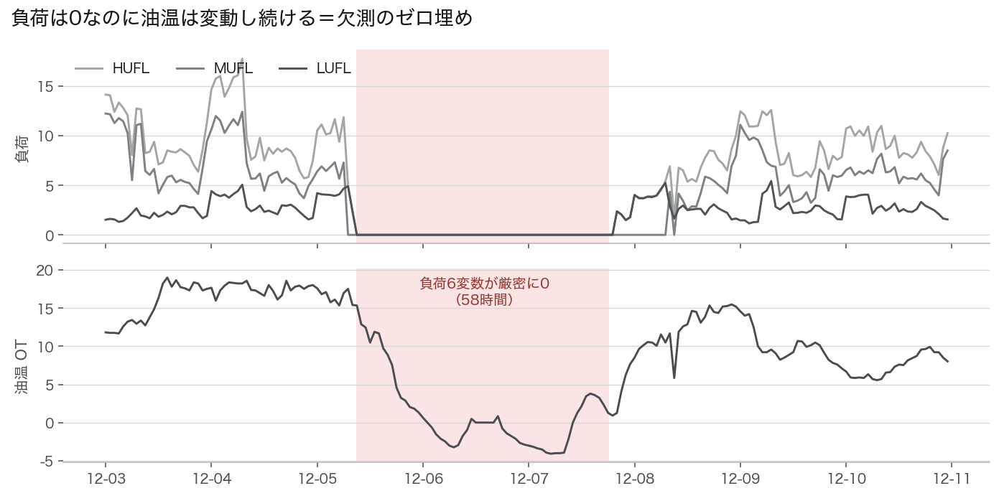
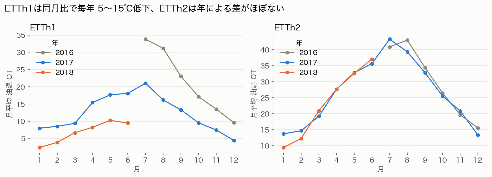
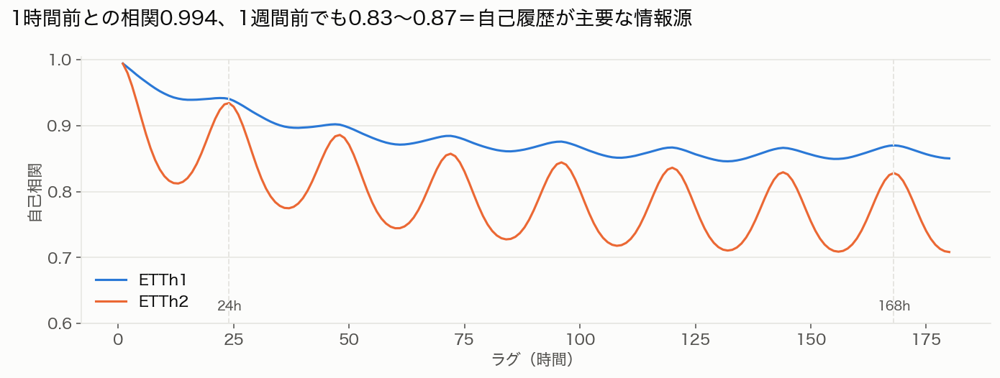
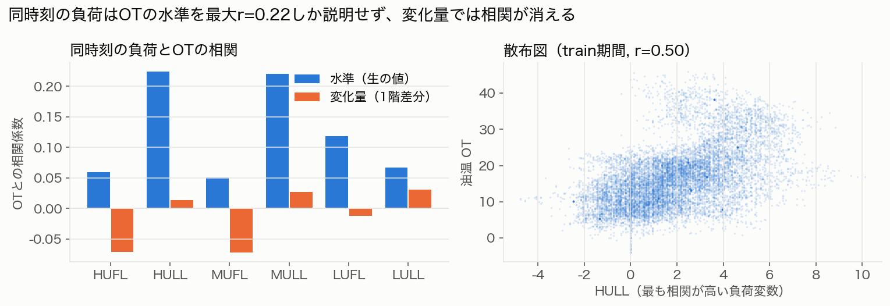
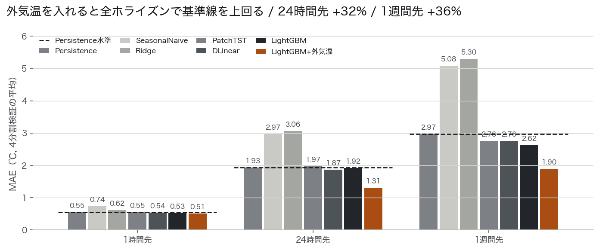
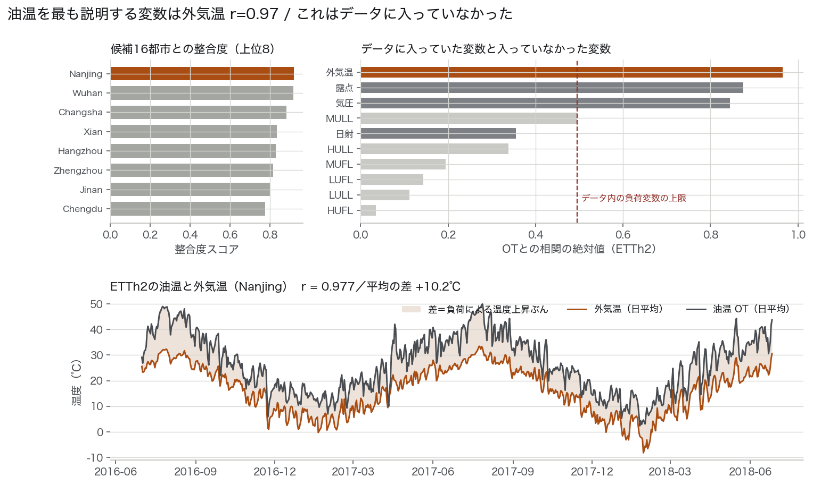
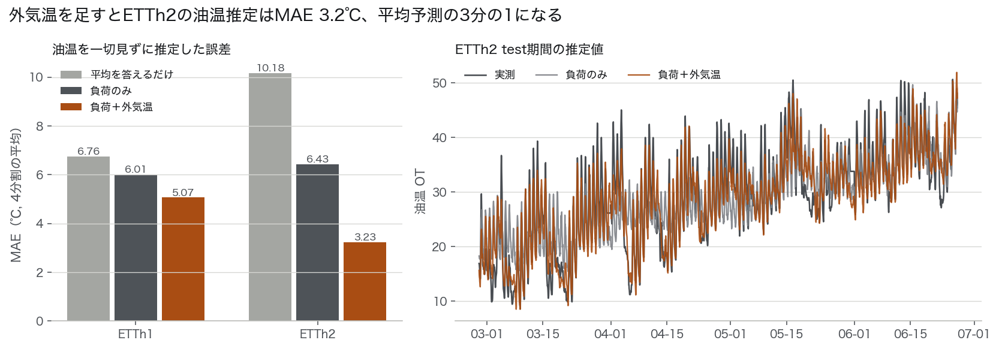
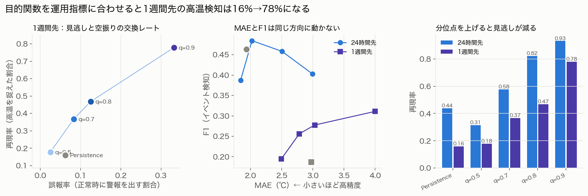
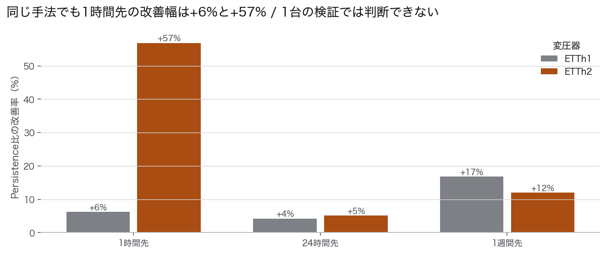

油温は自己相関がきわめて高い / 1時間前との相関 0.994
直近値をそのまま返す単純な手法が強い基準線になる
ここを起点にするとモデルの巧拙で得られる上積みは小さい
① 負荷変動や外部要因の影響により 温度変動が複雑化している ② 事後対応型の保全から 予測に基づく予防保全へ移行したい
問い：油温計を見ずにいま油温が何℃のはずかを当てられるか
入力：同時刻を含む負荷6変数と外気温 / 油温の履歴は一切使わない
課題への対応：負荷と外気温から「この条件での正常温度」を推定 / 固定閾値と違い季節と負荷条件によらず乖離を検出できる
問い：h時間後の油温を当てられるか（h = 1 / 24 / 168）
入力：時刻tまでに観測済みの全変数（油温の履歴を含む）
課題への対応：高温域に入る前に点検・負荷抑制の判断材料を出す / 事後対応から予測に基づく保全へ
「t=Tの油温を予測する際には、t=Tでの特徴量を使用して良い」——この許可で使える入力が増えるのはタスクAだけ
同時刻の負荷を使えるからこそ「今この瞬間の正常温度」を推定でき 異常検知の基準線が成立する
タスクBは時刻tまでの全情報を使うため この許可は入力を何も増やさない
そこで両タスクを分けて 許可が入力を増やす側とそうでない側を切り分けた

2016/12/5 09:00〜12/7 18:00 に負荷6変数がすべて厳密に0
同区間で油温だけは −4.1〜15.3℃ の範囲で変動を続けている
負荷ゼロで油温が動くのは物理的に説明がつかず 実測ではなく埋め値と判断
対処：該当区間を欠測として扱い線形補間したうえで学習・評価の対象から除外
ゼロのまま移動平均に流すと前後数日ぶんの特徴量まで汚染される
ETTh1の油温は0.07℃刻みに量子化されており 2年間で669種類の値しか取らない
ETTh2は0.0005℃刻みで1,628種類 / 同じ「油温」でも計測系が異なる
ETTh1は2年間で水準が大きく低下 / 次ページ
学習期間と評価期間で分布が異なる

ETTh1は全12か月で前年同月を下回る / 7月 −12.8℃・8月 −15.0℃
一方ETTh2の前年差は±2℃程度で横ばい
同じ期間・同じ省内の2台で挙動が真逆
同期間 ETTh1の負荷HUFLは増加 / 2017年1月 8.97 → 2018年1月 10.86
負荷が増えて油温が下がる以上 冷却系の改修・機器更新・計測系の変更といった系列の外側の要因を疑うべきだが データからは特定できない
学習期間の平均16.6℃に対し評価期間は8.6℃
油温の絶対値を学習したモデルは評価期間で系統的に外す
特に勾配ブースティング木は学習データの範囲外へ外挿できない
→ 予測対象を差分に変える設計判断につながる / p.7


1時間前との相関 0.994 / 24時間前 0.94 / 1週間前でも 0.83〜0.87
「直近値をそのまま返す」だけで強力な基準線になることを意味する
これを超えられるかが本PoCの実質的な争点
同時刻の相関は最大でHULLの0.22
さらに1階差分をとると相関はほぼ消える / −0.07〜0.03
水準の見かけ上の相関は共通の季節変動によるもので 変化の連動はない
油温 ≒ 外気温 ＋ 負荷による温度上昇 という物理を踏まえると最も説明力が高いはずの変数がデータに入っていない
日内パターン（早朝に最低・午後に最高）も外気温の形そのもの
→ 外部データで検証 / p.10
| データの性質 | 設計上の対処 | 理由 |
|---|---|---|
| レベルシフト 学習16.6℃ / 評価8.6℃ |
予測対象を差分 Δ = OT(t+h) − OT(t) にする | 絶対値を学習すると評価期間で系統誤差が出る / 勾配ブースティング木は学習範囲外へ外挿できないため致命的 / 深層モデル側は窓ごとの可逆正規化 RevIN で同じ対処になっている |
| 季節による難易度の差 | expanding-window で4分割し全季節を評価 | 最後の4か月だけで評価すると春〜初夏の性能しか見えない / 学習期間を伸ばしながら4か月ずつ評価し結論が特定の季節に依存しないことを確認する |
| 欠測のゼロ埋め | 該当58時間を検出して除外 | 学習・評価の両方から外す / 窓や予測先に区間が重なるサンプルも落とす |
| 自己相関が支配的 | Persistenceを常に併走させ これを超えたかで評価する | 絶対誤差だけを見ると「MAE 0.5℃」は高精度に見える / 単純手法との差分で語らなければ機械学習を入れる判断ができない |

| モデル | 1h | 24h | 168h |
|---|---|---|---|
| Persistence | 0.552 | 1.933 | 2.970 |
| SeasonalNaive | 0.742 | 2.967 | 5.085 |
| Ridge | 0.621 | 3.059 | 5.297 |
| PatchTST | 0.550 | 1.974 | 2.763 |
| DLinear | 0.544 | 1.868 | 2.761 |
| LightGBM | 0.526 | 1.924 | 2.621 |
| LightGBM＋外気温 | 0.506 | 1.308 | 1.898 |
| モデル | MAE | 学習時間 | パラメータ |
|---|---|---|---|
| LightGBM＋外気温 | 1.308 | 14秒 | — |
| DLinear | 1.868 | 3秒 | 688 |
| LightGBM | 1.924 | 1.7秒 | — |
| Persistence | 1.933 | 0秒 | 0 |
| PatchTST | 1.974 | 71.6秒 | 106,319 |
学習に使える有効データは1時間粒度で約17,000点 / Transformerが表現力を発揮するには少ない
加えて系列の支配的な構造が「直近値への強い依存＋日周期」という単純なもので長距離の依存関係を捉える機構が精度に結びつく場面が乏しい
DLinearがPatchTSTを上回るのは 線形分解モデルが長期予測ベンチマークでTransformerを上回るという既報 Zeng et al., 2023 と整合する
現時点で深層モデルへの投資は推奨しない
ただしデータ量が桁で増える場合は再評価に値する / 多数の変圧器を横断学習する等
DLinear・PatchTSTはいずれも窓ごとの可逆正規化 RevIN を入れており 表形式モデル側で差分を予測しているのと同じ非定常対策を入れている / この処理を外すと両モデルとも大きく劣化する / 学習時間はApple M系GPU（MPS）での実測値


| 入力 | ETTh1 MAE | ETTh2 MAE | ETTh2 R² |
|---|---|---|---|
| 平均を答えるだけ | 6.76 | 10.18 | −1.51 |
| 負荷6変数のみ | 6.01 | 6.43 | −0.02 |
| 負荷＋外気温 | 5.10 | 2.11 | 0.854 |
負荷だけでは平均を答えるのと同じ R²=−0.02 だったものが 外気温を足すと分散の85%を説明できるようになる
これは「この負荷・この外気温なら油温は何℃が正常か」という基準線が引けることを意味する
実測との乖離を監視すれば 固定閾値では不可能な季節・負荷条件によらない異常検知が成立する
ETTh1はR²=−1.66と依然として実用水準にない
p.5で示した2年間のレベルシフトが外気温で説明できないため
機器側の改修や計測系の変更が疑われ その情報なしには基準線を引けない
2台で結論が割れること自体が 導入前に台ごとの素性確認が要ることを示す
| モデル | MAE | 再現率 | 適合率 | F1 |
|---|---|---|---|---|
| LightGBM（外気温なし） | 1.924 | 0.297 | 0.538 | 0.382 |
| Persistence | 1.933 | 0.496 | 0.555 | 0.524 |
| SeasonalNaive | 2.967 | 0.702 | 0.319 | 0.439 |
| LightGBM＋外気温 | 1.308 | 0.526 | 0.692 | 0.598 |
MAEを最小化する学習では モデルは自信のない場面で平均寄りの無難な値を返すのが最適になる
その結果 閾値を超える「尖った予測」が出なくなり 見逃しが640件まで増えた
外気温なしのLightGBMはMAEでPersistenceとほぼ同じ（1.924 対 1.933）なのに 再現率は0.496→0.297へ落ちる
℃単位の誤差が同じでも見逃しは4割増える
当初は高温イベントの閾値を「学習期間の95パーセンタイル」で固定していたが p.5のレベルシフトにより評価期間で該当イベントが1件も発生しないという不具合が起きた
そこで「予測時点から見た直近30日の95パーセンタイル」という時点ごとに動く閾値に変更
時刻tまでの観測しか使わないため実運用でもそのまま計算でき 「平常時より明確に高い」を季節によらず定義できる
予測力が足りない状態でMAEだけを最適化すると 警報の用途では基準線を下回る
外気温を入れて予測力が上がると解消し F1は0.382→0.598へ
精度指標だけでモデルを選ぶと この差が見えない / 次ページは目的関数側からの打ち手

損失関数を絶対誤差から分位点損失に替え 条件付き分布の中央値ではなく上側を予測させた
「平均的に何℃か」ではなく「高い方に振れるとすれば何℃か」を答えるモデルになる
実装上の変更は目的関数の指定のみ / 特徴量もデータ分割も同一
| 設定 | MAE | 再現率 | 誤報率 |
|---|---|---|---|
| Persistence | 2.970 | 0.160 | 6.2% |
| 分位点 0.5 | 1.873 | 0.497 | 4.6% |
| 分位点 0.7 | 2.019 | 0.573 | 6.8% |
| 分位点 0.8 | 2.199 | 0.657 | 9.3% |
| 分位点 0.9 | 2.711 | 0.808 | 16.5% |
最良の1モデルではなくこの交換レートの表そのものを意思決定の材料として提示する
「見逃し1件のコスト」と「空振り点検1件のコスト」の比が分かれば分位点は一意に決まる
その比を持っているのは保全部門であってモデル側ではない
前ページまでの再現率は時刻単位＝「高温だった時間の何割に警報を出せたか」を測っている / 同じ高温区間に毎時警報を出しても複数件と数えられる
保全部門が判断に使うのは何件の事象に気づけたか / 何時間前か / 警報は週に何回鳴るかなので 連続する高温時間帯を1件の設備イベントとして数え直した
| モデル | 検知 | 検知率 | リード | 警報/週 |
|---|---|---|---|---|
| LightGBM＋外気温 | 89 | 0.51 | 24h | 2.24 |
| Persistence | 82 | 0.47 | 23.5h | 2.76 |
| SeasonalNaive | 113 | 0.65 | 24h | 6.13 |
| LightGBM | 57 | 0.33 | 23h | 1.84 |
| モデル | 検知 | 検知率 | リード | 警報/週 |
|---|---|---|---|---|
| LightGBM＋外気温 | 93 | 0.51 | 168h | 1.93 |
| Persistence | 60 | 0.33 | 168h | 2.78 |
| SeasonalNaive | 97 | 0.53 | 168h | 5.38 |
| DLinear | 3 | 0.02 | 168h | 0.29 |

| 変圧器 | Persistence | 最良モデル | 改善 |
|---|---|---|---|
| ETTh1 | 0.552 | 0.506 | +8.4% |
| ETTh2 | 0.929 | 0.386 | +58.4% |
記録分解能 / ETTh1の油温は0.07℃刻みに量子化されており 1時間で動く量 中央値0.28℃ に対して刻みが粗い
Persistenceの誤差の相当部分が量子化ノイズで これは学習で減らせない
ETTh2は0.0005℃刻みで滑らかに記録されており 短期の連続的な変化を学習できる
| 判断 | 理由 |
|---|---|
| 予測対象を差分にする | レベルシフトへの対処 / 木モデルは学習範囲外へ外挿できない |
| ナウキャストで油温履歴を禁止する | 油温のラグを入れると相関0.994の変数が支配し「負荷から推定できるか」という問い自体が測れなくなる |
| expanding-window 4分割 | 最後の4か月だけでは春〜初夏の性能しか見えない / 結論が季節に依存しないことを確認する |
| 学習末尾にギャップを空ける | 学習行のターゲットが評価区間に食い込むリークを防ぐ |
| early stoppingが不要なモデルには学習データを全量渡す | 当初は全モデルから一律に検証用2か月を削っていた / 修正によりRidgeのMAEが4.39→3.06に改善し順位が変わった |
| 閾値を時点ごとに動かす | 固定閾値ではイベントが0件になり指標が機能しなかった（p.12） |
| 見送った案 | 理由 |
|---|---|
| ホライズン一括の系列出力 | ホライズンごとに独立して学習する方式を採用 / 用途で必要な指標も許容誤差も異なり 個別に最適化・評価できる形を優先した |
| 全期間統計での正規化 | 評価期間の情報が学習に混入する / 分割ごとに閉じた統計のみ使用 |
| ETTm（15分粒度）を主軸にする | ETThはETTmの毎正時サブサンプルで同一系列であることを確認済み / 粒度を上げても支配的な構造は変わらず計算コストが4倍になる |
| 深層モデルのハイパラ探索 | 既定設定でPersistenceを超えられていない段階で探索に投じるより 変数追加の方が期待値が高いと判断 / 実際にMAEが改善した |
| MAEでのモデル選定 | 運用指標で順位が逆転するため p.12 / 最終的な推奨は用途ごとに分けた |
将来予測では対象時刻 t+h の気温が正確に分かる前提で評価した / 実運用では気象予報が入る
改善幅の大半はこの前提に依存する（外気温なしでは24時間先 +0.5%）ため 本結果は予報が完全な場合の上限値
検証方法：予報履歴を入手するか 予報誤差を模擬したノイズを加えて感度を測る
ETDatasetは地点を公開していない
16都市との整合度で南京を選んだが 南京0.919と武漢0.918はほぼ同点で確定はできない
実地点が判明すれば相関はさらに上がる可能性が高い
データセットに単位の記載がなく 変圧器の定格・冷却方式・容量も不明
そのため絶対的な危険水準を設定できず 高温イベントを分布の相対位置 直近30日の上位5% で定義せざるを得なかった
実運用では機器仕様に基づく閾値に置き換わる
p.15の通り結論が台によって割れる / 母数2台では「どちらが一般的か」を判断できない
2年で夏ピークが36℃→21℃に下がった理由をデータから特定できていない
機器更新・冷却系改修・計測系変更のいずれかと推定されるが設備台帳と突き合わせないと確定できない
この期間をまたいで学習することの妥当性自体が未検証
ナウキャストを異常検知に使う提案をしているがデータに実際の異常事例のラベルがない
「乖離が出れば異常」という設計の妥当性は 異常ラベル付きデータでの検証を経ていない
報告値は全期間を4分割した検証の平均で モデル比較のための交差検証値
差分ターゲット・外気温・地点・分位点を選んだ後も同じ期間で報告しているため 設計を固めた後の未見データに対する性能ではない
本結果は探索的PoCの推定値として読む必要がある
掲載結果はリポジトリにコミット済みのCSVを使用している / ERA5再解析やAPI側の更新で再取得時に数値が変わる可能性がある
取得日・クエリ条件はコードに記録しているが ハッシュによる固定はしていない
①と⑦から 本結果は「気象予報が完全に当たる条件での 探索を含んだ推定値」として扱うべき
導入判断の前に 予報誤差を織り込んだ再評価と 設計を固めた後の独立評価が要る
本検証では予測精度の向上に予算を割く根拠は得られなかった
同額を気象データの接続と計測系の整備に充てる方が結果につながると判断する
| 仮定 | 根拠 |
|---|---|
| 2016/12/5 09:00〜12/7 18:00 の負荷ゼロは欠測である | 負荷6変数が同時に厳密な0を取り かつ同区間で油温が変動を続けている / 負荷ゼロで油温が動くのは物理的に説明できない |
| ETTh1とETTm1は同一変圧器の異なる粒度である | 毎正時の値を突き合わせ 全17,420点・全7変数で差が厳密に0であることを確認 |
| 観測地点は華中地方（南京近傍）である | 16都市の気温との整合度で最上位 / 選定には最初の分割の学習期間までしか使わない / 武漢とほぼ同点で確定はできない＝限界② |
| 油温の単位は℃である | データセットに記載はないが値域と季節変動の振幅が℃として自然 / ただし絶対的な危険水準の設定には使えない |
| 仮定 | 根拠 |
|---|---|
| 予測ホライズンは 1 / 24 / 168 時間とする | それぞれ「監視」「翌日の運用計画」「週次の点検計画」という運用単位に対応 / ETT論文の標準設定 24〜720 はベンチマーク比較用であり運用価値の検証には合わない |
| 高温イベントは直近30日の95パーセンタイル超過と定義する | 機器仕様が不明で絶対閾値を置けない / 時刻tまでの観測のみで計算でき実運用でも成立する |
| 将来予測では対象時刻 t+h の外気温が既知とする | 実運用では気象予報が相当する / 予報列と実測列はコード上も分けている（wx_fc_ と wx_obs_）/ 本結果は予報が完全な場合の上限値＝限界① |
| 評価は expanding-window 4分割の平均で行う | 単一のhold-outでは評価期間の季節に結論が依存する |
| 分割 | 学習期間 | 評価期間 |
|---|---|---|
| 分割1 | 〜2017/02/26 | 2017/02/27〜06/26 |
| 分割2 | 〜2017/06/26 | 2017/06/27〜10/26 |
| 分割3 | 〜2017/10/26 | 2017/10/27〜2018/02/26 |
| 分割4 | 〜2018/02/26 | 2018/02/27〜06/26 |
各分割の学習末尾2か月をearly stopping用の検証に充て 学習末尾からホライズン分のギャップを空けている
python -m venv .venv && .venv/bin/pip install -r requirements.txt
PYTHONPATH=src .venv/bin/python src/eda.py # EDA図の生成
PYTHONPATH=src .venv/bin/python src/fetch_weather.py # 外部データ取得と地点推定
PYTHONPATH=src .venv/bin/python src/run_experiment.py --datasets ETTh1 ETTh2 --tasks forecast nowcast [--external]
PYTHONPATH=src .venv/bin/python src/run_deep.py --dataset ETTh1 # DLinear / PatchTST
PYTHONPATH=src .venv/bin/python src/run_quantile.py # 分位点回帰
PYTHONPATH=src .venv/bin/python src/analyze_results.py # 集計と結果図
| モデル | 1時間先 | 24時間先 | 1週間先 | 168h改善 |
|---|---|---|---|---|
| Persistence | 0.552 | 1.933 | 2.970 | 基準 |
| SeasonalNaive | 0.742 | 2.967 | 5.085 | −71.2% |
| Ridge | 0.621 | 3.059 | 5.297 | −78.4% |
| PatchTST | 0.550 | 1.974 | 2.763 | +7.0% |
| DLinear | 0.544 | 1.868 | 2.761 | +7.0% |
| LightGBM | 0.526 | 1.924 | 2.621 | +11.8% |
| LightGBM＋外気温 | 0.506 | 1.308 | 1.898 | +36.1% |
| モデル | 1時間先 | 24時間先 | 1週間先 |
|---|---|---|---|
| Persistence | 0.929 | 3.292 | 5.467 |
| SeasonalNaive | 0.731 | 4.927 | 9.210 |
| Ridge | 0.638 | 7.552 | 9.874 |
| LightGBM | 0.416 | 3.283 | 4.866 |
| LightGBM＋外気温 | 0.386 | 2.090 | 2.892 |
| モデル | 再現率 | 適合率 | F1 |
|---|---|---|---|
| LightGBM＋外気温 | 0.811 | 0.800 | 0.806 |
| LightGBM | 0.799 | 0.788 | 0.793 |
| PatchTST | 0.772 | 0.808 | 0.789 |
| DLinear | 0.753 | 0.819 | 0.785 |
| Ridge | 0.815 | 0.749 | 0.780 |
| Persistence | 0.763 | 0.766 | 0.765 |
1時間先では全モデルが F1 0.76〜0.81 に収まり差がつかない / 学習を入れる必然性は薄い / ナウキャストの結果は p.11 を参照
| 設定 | MAE | 再現率 | 適合率 | 誤報率 |
|---|---|---|---|---|
| 24時間先 | ||||
| Persistence | 1.933 | 0.439 | 0.491 | 3.4% |
| 分位点 0.5 | 1.323 | 0.531 | 0.633 | 2.2% |
| 分位点 0.7 | 1.496 | 0.691 | 0.551 | 4.3% |
| 分位点 0.9 | 2.350 | 0.924 | 0.348 | 16.5% |
| 1週間先 | ||||
| Persistence | 2.970 | 0.160 | 0.225 | 6.2% |
| 分位点 0.5 | 1.873 | 0.497 | 0.519 | 4.6% |
| 分位点 0.7 | 2.019 | 0.573 | 0.433 | 6.8% |
| 分位点 0.9 | 2.711 | 0.808 | 0.328 | 16.5% |